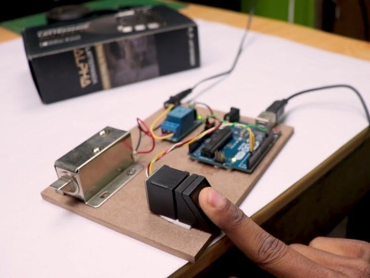

Biometric Door Lock System
This project is a secure access control system designed to enhance home and office security. Utilizing Arduino technology and the Adafruit Fingerprint library, the system integrates fingerprint recognition to unlock the door, ensuring that only authorized users gain access. If an incorrect fingerprint is detected more than 5 times, the system activates a buzzer to alert users of potential unauthorized access attempts.
The system works by scanning and verifying fingerprints. Upon a successful match, the door unlocks, providing seamless and secure entry. It effectively eliminates the risks associated with lost keys or forgotten passwords. We spent approximately 2 months developing and refining this project.
Technologies:
- - Arduino
- - Adafruit Fingerprint Library
- - Fingerprint Sensor
- - C Programming
- - Hardware Integration